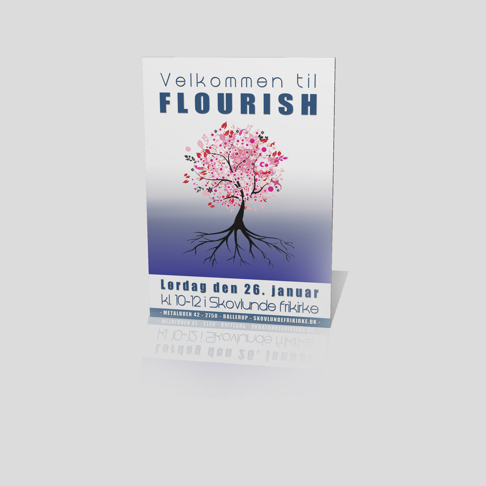
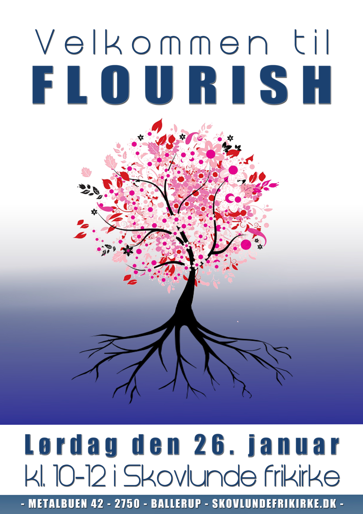

Opgaven her var at skabe en plakat til et arrangement for kvinder i en lokal kirke. Temaet var at blomstre, men det skulle tage udgangspunkt i rødderne. Kravene til opgaven var derfor bla. synlige rødder, et blomstrende træ og livgivende vand.Tegningen er sammensat i Adobe Photoshop CC.


Tilbage til Portfolio